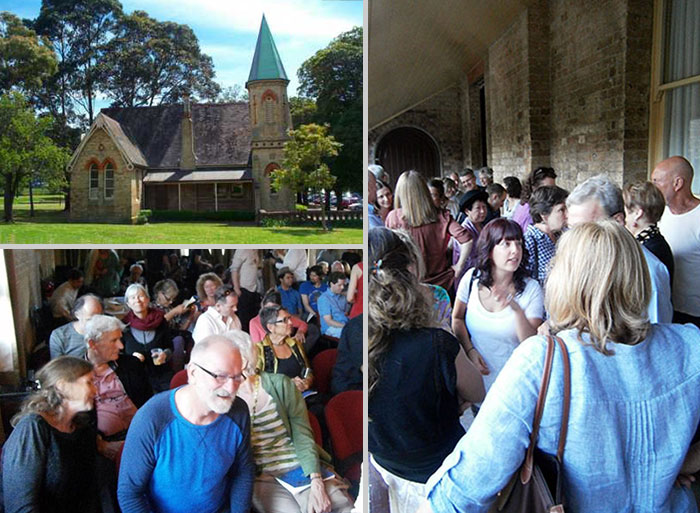
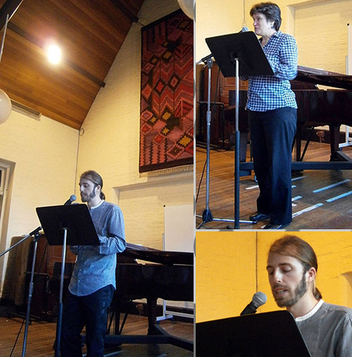

|
Paths of Flight : Luke Fischer |
|||
 |

Book Description Lifting my head I see two black birds with wings outstretched arcing more smoothly than figure skaters away from then towards each other Their fingers almost touch as they pass and arc out again I follow the fluent sequences... In Paths of Flight we find an assured new poet sprung fully formed in his first collection. Luke Fischer’s poems startle me to wake again, to wake not only to the thriving details of the worlds surrounding us but to the power of language to reveal the music simmering and alive in every moment. I don’t know which I admire more—the intensity of the reality in Paths of Flight or the surprises of language that come in so many of the poems throughout. These two elements, when bound together in Fischer’s poetry, are enthralling and enduring. Pattiann Rogers Fischer has a seemingly effortless ability to blend visual detail and imaginative vision. His poems relish in the natural world. He has an impressive lightness of touch. His lines fall as calmly and elegantly as snow, layer upon layer, and are just as transformative in their beauty. These often wistful, always subtle and intimate poems fuse thought and feeling with great poise. Judith Beveridge Luke Fischer writes with a rare combination of delicacy and strength. At the heart of this poetry is a gaze that renders things present to us in new ways and that leads us to look in unfamiliar directions. Kevin Hart ISBN 9781876044855 Published 2013 96 pgs Cover painting: detail from Buborékélet (Bubble-life), 2005 by Miklós Hegedűs $22.95 Back to Top | |||
| Book Sample Portrait of a Thinker His eyebrows are falcon wings gliding on a constant current. His metallic eyes take in the scene dart to distant prey. His nose is beak-like— not the small busy beak of a sparrow nor the ibis probing a garbage bin not the slender beak of a honeyeater extracting secrets from nectaries, nor the filter-beak of a flamingo— a raptorial beak that admits no maybes no sorting through silt, it seizes what it wills knows only yes and no. His mouth is ascetic— lips of stone in a garden’s shade. His ears are small and undistractedly listen for the inaudible. His face is wind-sculpted, facetted like a crystal. And his brow is steep and hard not sandstone but granite, tall but not the Tower of poets and painters that rises through clouds and crumbles near the stars, catching their passing glimmer. I think—inscribed in every feature. In Late Winter For months I’ve been a neo-Platonist inhabiting the crystal palace of my mind, a palace not unlike an Escher lithograph. Each morning I rise early and climb the spiral staircase while descending in reflection through the glassy floor until I reach my study in the loft. I spend the day seated at my desk beside a pentagonal window and under the quiet glow of a lamp etch patterns in silver plates. From time to time I look over my shoulder and see a man seated at his desk beside a pentagonal window; he looks over his shoulder until we both turn away. I work until I’ve finished etching a dodecahedron inside a snowflake then climb the spiral staircase through the glassy floor and nap on my printed bed. On rising I descend back into my study take snow-white sheets from a drawer and fold them into origami storks which I release into the crystal night. Departing they return through the opposite window and glide into my hands which unfold them— my hands etched in a pentagonal plate of silver. This morning I rise at dawn and descending the spiral staircase notice my image is blurred, the floor melting: A falling snowflake about to dissolve in a stream. Snowdrops in West Philadelphia The Winter too wants to flower before the buttercups declare it’s Spring children swarm the play equipment like bees returning to their hives men and women shed clothes like petals. Winter too wants to flower and while the last snow melts she erects her memorials. Surprised we stop by them: distillations of despair sadness lifted in song quiet catharsis in three identical notes touched by Chopin’s fingers. Two weeks later we stop again and lowering our heads discover the difficult memory tended since we turned away. Back to Top | ||||
|
A Life Viewed through Verse Megan Blake Plumwood Mountain, Vol. 1, No. 2, August 2014 Paths of Flight
felt undecided as I first encountered it—at turns caught and
contradictory, bent sometimes one way and sometimes the other, strung
between and among competing ideas—but, in the end, seemed to achieve a
certain balance and reconciliation, that was perhaps its destination
all along. afterwards, moving to a more geological metaphor with: His face is wind-sculpted, A Life Viewed through Verse Geoff Page Canberra Times, 8 February 2014 .......Most poets' work tends to disappear into a 20-year wilderness after their death, before being rescued by an enterprising scholar. Or they are taken up by a wholly new generation of readers who have heard distant echoes of the poet's original reputation and go back to check what the "fuss" was about......[..] Luke Fischer, on the other hand, at 35, has little need to worry about such things. Paths of Flight, his first collection, is another example of the outstanding debuts being made in Australian poetry these days. Like most first books, it heads in several different directions at once and it is not yet apparent which will prove to be the next, or the ultimate, one. His influences at this point plainly include Rilke, modern European poetry more generally and the Imagists. Quite a number of poems are ekphrastic (that is to say, poems written about works of art). In many of these Fischer seems interested in just how far descriptiveness as a technique can be pushed, before it becomes problematic or counter-productive. He's clearly interested in aesthetics too (as surely all true poets are). Diptych, the book's final poem, is an excellent example of Fischer's "poet-as-painter" stance. He starts by asserting that "The blue of this morning / is the blue of a renaissance sky". He "squint(s) to see this morning sky / in the diptych / framed by my apartment window" and then goes on to note incidental detail, which is less than painterly ("the TV antennae / perched like featherless birds", "the coarse brown building / in Brutalist style" and so on) before defiantly closing with the assertion he made at the outset. Some of Paths of Flight's most engaging poems, however, happen when Fischer drops his ekphrastic approach in favour of a moving character sketch (Holocaust Survivor), an ironic or comic set piece (Paddington Morning, Elegy to the Mop) or playful descriptions of birds (Band of Cockatoos, Corellas). There are longer, more obviously ambitious poems here too (The Return of the Prodigal Son, Augury) but it is in these distinctly accessible "one-offs" that readers will most probably rejoice. It should be noted, however, that not a single poem in Paths of Flight is fashionably "opaque" - a commendation perhaps in itself. Paths of Flight Lucy Van Cordite, 9 January 2014 In Shakespeare’s last great poem, ‘The Phoenix and the Turtle’, the owl is banished from the allegorical proceedings of the bird funeral: But thou, shrieking harbinger, Foul pre-currer of the fiend, Augur of the fever’s end, To this troop come thou not near Whether you read this poem as dense figural allegory, enigmatic elegy or refined coterie poem, you should mark this ironic moment of exclusion. The tradition of augury in poetry is richly prefigured here, not only in the careful inclusion and exclusion of birds, but in the deceptive formal simplicity of the stanzas. Devolving into triplets in the threnody coda, the rhythm of the poem is incantatory, reminiscent of the magic of prophetic language. Why, then, the prohibition on the augur owl? Luke Fischer’s first collection, Paths of Flight, is deeply alert to the signs made by birds. Fischer displays an affinity with a certain notion of the ‘natural’ world, as well as a temperament for classical poetic tropes. Birds, depicted in both mythical and parochial attitudes, populate the collection. And while not every poem depicts the physical manifestations of a bird, many actually do. The owl keeps ‘vigil in a cell / of twisted boughs’; the swift’s brow is ‘planed by supernal winds’; the punk cockatoo ‘flares his pineapple Mohawk.’ Conversely, more enigmatic figures are infused with bird-like qualities. The first line of the collection, from the poem ‘Portrait of a Thinker’, is unequivocal: ‘His eyebrows are falcon wings/ gliding on a constant current.’ There is a certain satisfaction to be taken from such thematic consistency. Like Shakespeare’s poem, Fischer’s book takes up an allegorical mode, calling forth the presences of ‘Owl’, ‘Swift’, ‘Corellas’, ‘Raven’ and a ‘Band of Cockatoos’ through the direct titles of the poems. The collection’s undertaking as a work of augury is emphasised by its omnibus title. How do we read a bird’s flight, which once foretold the will of the gods? What is the relation between poetry and prophesy? I’m making this sound unnecessarily lofty - Fischer’s address is nothing if not graceful and intimate, posing these questions about language, time and causality through a personal turn. For ‘paths of flight’ also implies a travelling itinerary; the collection maps a topography of a young cosmopolitan speaker, tracing snowdrops in West Philadelphia to early spring in Hamburg. The matter-of-factness of a Paddington morning, ‘a freckle blemishing her even tan,’ is set against the expanse of ‘Syrian Desert’, where the totemic speaker and observed man appear ‘cloaked in the winds.’ I couldn’t say that the collection is Eurocentric, but there is a longing for Europe across this collection that is likely linked with Fischer’s Eastern European heritage, as well as his recent academic postings in Germany. Australia is rendered in contrasting tones of bare familiarity. There is a sort of blankness that the speaker alludes to in ‘Twilight’: ‘Like children / we hold no beliefs.’ Consistent with the book’s theme, the birds deliver a sign: Through the emptiness a flock of birds surely follows its invisible compass, and reminds us of another home Such a sentiment not only speaks of longing for elsewhere, but also speaks of the ambivalence of the cosmopolitan wanderer, who finds home precisely in mobility and rootlessness. Non-fixity reaches its joyful apex in ‘Lexcial Synthesis 101’, where trees walk and travel on planes. The privileging of the path, or the space ‘in-between’ is showcased in ‘Swift’, which, in a turn reminiscent of Derek Walcott, celebrates flight as a liberation from earthly history: Up there almost forever, journeying from Europe to Africa […] At equal elevation you pass eagles, they scan the earth, you never look down. The speaker ironically finds this emblem of mobility, ‘awkward on land as a seal.’ The swift is nursed, restored and released to the winds. The poem closes on an apposite note of ambivalence, with the speaker left wondering ‘whether you reached the sky, / or landed helpless in the next field.’ In Paths of Flight the uncertainty of earthly peregrinations is married to anxiety about how words take flight. How do they reach their destination? Is memory the destination? How do we remember what we see, and what we say? Fischer alludes to that fear of the ancients, the winged word, numerous times in the collection. But winged words, and ‘air-writing’ do not signify horrific disappearance or erasure, but rather reveal a world charged with story and signification, an excess of ways to read signs. The reflexive ‘Poem’ shows the poet in a derangement of meaning as he surveys the infinite answers to the question, ‘what is a poem?’ The only relief is tautology: ‘A poem is a poem.’ If not quite a blessing, erasure is surely a kind of concession, as it is in ‘Transcription from the first page of a hermit’s diary (c. 1500): ‘So I speak / and do not speak / Even as I write / my pen / erases.’ Paths of Flight is a strong first collection, drawn equally from a scholarly depth of influence as from a calm, intuitive knack for scene and story. And Fischer is a strong poet, watching the delicate details of the natural world, gracefully gleaning their abstractions. ‘Augury?’ won the Overland Judith Wright Poetry Prize and appears near the end of the collection, drawing the subtly interrelated themes together. The speaker observes two black birds in flight and simultaneously feels the stir of ‘recurrent doubts about the art / of poetry, its prospects in our time.’ Fischer’s owl is the key inclusion in this collection of ambivalent augury - the bird that watches the watchers: ‘It’s frontal eyes / (new moons) / kept us under watch / long before we noticed.’ Doubt about the art’s prospects seems ever increasing, yet it remains the task of the poet to read for signs. Back to top 2012 Overland Judith Wright Poetry Prize for New and Emerging Poets Awarded to Luke Fischer for "Augury" Peter Minter - Judge, Poetry Editor, Overland (Augury - on page 74 : Paths of Flight) This year’s fine winning poem, ‘Augury?’, by Luke Fischer, begins ‘I’m not sure if I’m following a trail / left by goats or on the human path’. A walk in the hills is put into perspective by a wonderfully overt sense of uncertainty. ‘I’m not sure’ gives a contemporary (and ethically acute) spin to the ‘ramble’ poem, a genre central to environmental literature, in which observations and impressions collected on outdoorsy treks are traditionally enumerated. ‘Augury?’ balances epistemological certitude on a hinge of doubt, first announced by the question mark in the title and then followed through in a finely composed event where the complexities of human ambivalences are made ineluctably central to the experience of nature. At first the poem grabbed me because it is fundamentally ‘honest and well-crafted’, making no bones about wanting to be easily read and demonstrating an excellent grasp of romantic, modern and post-modern environmental poetry and poetics, all the way from Goethe to Gary Snyder. Is it a goat or human path, back there in Greece? ‘Augury?’ is a marvellous example of a radical poetry that draws its energy more from progressive intention and scope than, for instance, displays of formal experimentation. It’s a big bad world out there, and we need all the good poetry we can get. | ||||
Launch Speech Judith Beveridge Old Darlington School University of Sydney 23rd November 2013  Book Launch at Sydney University  Judith and Luke speak I am very honoured to be launching Luke Fischer’s first book of poems Paths of Flight. As you can see, this is a beautiful-looking book and I can assure you the poems inside the book are just as attractive and enticing as is the cover. What is striking about Luke’s work is his ability to be deeply grounded in the physical details of the world (the natural world in particular) - but also to gain movement, lift off, flight. Reading one of Luke’s poems is like feeling the earth solid beneath your feet, while at the same time sky-riding, gliding, ascending. So the title Paths of Flight is a wonderfully apt expression of the book’s pervading sensibility. So many of the poems, in their imagery, move from the earth to the sky, or conversely they touch down - moving from sky to earth. So it is not surprising to find many mentions of birds, of wings, wind, clouds, snow and snowflakes, butterflies, bees; and verbs such as levitate, ascend, lift, flow, dance, take flight. So many phrases enact either the sense of descending or alighting, or the sense of ascension, of taking to the air. In the poem ‘In Mind of Snow’ Luke asks: Will the snow keep making amends, covering up constructions to return us memory of beginnings, of our first steps down from the untarnished sky into the valley... ‘In Danse Macabre’ we have the wonderful movement upwards when the jackdaws who after ‘snatch[ing] with their beaks at the soil like diggers long acquainted with death...’ then ‘like letters of an obituary [they] scatter on the wind.’ At the end of ‘Pedestrian’ the speaker says: I want to meander, flow and tumble, to lift and eddy with the gathered leaves I want to dance This is a book that celebrates movement. There are poems about walking, arriving, travelling, about rivers flowing, ice and snow melting, about the diurnal and seasonal flow of time. But Luke also celebrates the movement of the mind. In the poem ‘Symbiosis’, though the speaker is tired and jet-lagged, they say: ‘today I’ve been reading poems/ the way a bee moves from flower to flower’. Luke celebrates artistic insight, poetic thought. He contrasts this with dogmatic, inflexible thinking very memorably in the first poem in the book called ‘The Thinker’: His face is wind-sculpted, facetted like a crystal. And his brow is steep and hard not sandstone but granite, tall but not the Tower of poets and painters that rises through clouds and crumbles near the stars, catching their passing glimmer. I think - inscribed in every feature. Luke achieves in his poems a fine level of clarity without sacrificing complexity. In many of Luke’s poems there is the observed detail and the transcended observation - he moves from looking through to vision. This is no easy task, but in Luke’s work it is seamlessly achieved. In his rhythms, pitch, tone, and in the tender intimate shape of his speech, there is composure and calm. Luke’s ability not to straitjacket the emotions in his poems, but to let the feelings find their way in movement and revelation is to be much admired. These poems impart genuine tenderness and responsiveness, and it is this finely tuned, deeply connected sensibility to the world’s beauty and impermanence, that gives so many of these poems their appeal. His work rises to an eloquence that is both poignant and moving. I surrender to the dark water Friends scattered over the world recently and long dead gather around the shore Their looking adds salt to the water lets me float At the same time a star arrives above my head and though the earth moves the star is still ‘Centring’ With Luke’s poems you feel the power of a mind coming upon the world - but not a mythical or idealised world - it’s ‘this world’ in all its concrete particularity. That ability to chart appearances accurately is what makes possible that other transaction, to penetrate with practised insight into the mystery. In so many poems, Luke combines the domestic and mundane with the sacramental, he is able to find calm and solace in unlikely places, as in these lines from ‘Burial Ground’: This afternoon a cloth of white gold spreads over the grass and broken tombstones and a scent of rose oil comes and goes. Though cars incessantly rush by the rail it is good to stroll here and sit a while - like holding your grandmother’s hand as it slackened and finding reassurance in a dream. Luke’s book is concerned about talking with clarity, depth and common ground. It’s about the true communicative value of beautiful and finely observed images, though his work is not about stasis, it’s about flow and the flow of perception, the ability of the mind to move with flair and grace and to come into vision. His poems are not only about outward journeys, but more importantly about the leap inwards. Luke’s poems do seem to be expounded wholly from both body and spirit, and he stitches both ideas and emotions together in memorable ways. His book is a treasure of finely nuanced, delicately sensed moments of perception and cognition. I love his ability to progress through sensation into perception. A circumference of blue-metal cloud suffused with strange light, the tense brow of a storm, not far. Above, boy-blue, air-brushed with cirrus-feathers: a bay, margined by hazardous rocks. In the shrubs on either side of the path piccolo voices bubbling like the river recall how we trod, light-footed. As a glassblower’s breath hollows a lump of glass, as a monk attains stillness, space clears. Through the emptiness a flock of birds surely follows its invisible compass, and reminds us of another home. The river’s white tongues clean the pores of our flesh, erase ink-words. Like children we hold no beliefs. ‘Twilight’ There are many poems in this book that are impressive for their variety, for the subtlety and sinuosity of their music and for the immaculate attention to craft. Luke has obviously weighed each line and word with care and precision and he has produced a most impressive, pleasurable and memorable collection of poems. Back to top |